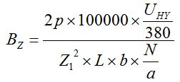
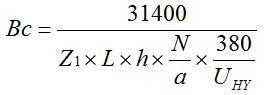

Перейти на главную страницу справочника.
Магнитная индукция в зависимости от исполнения и серии электродвигателей.
Магнитные индукции электродвигателей мощностью до 5кВт.
{kind=link}
Магнитные индукции электродвигателей мощностью от 5 до 25кВт.
{kind=link}
Магнитные индукции электродвигателей мощностью от 25 до 75кВт.
{kind=link}
Магнитные индукции электродвигателей мощностью более 75кВт.
{kind=link}
- Выше показанные таблицы выполнены по данным из справочного пособия Девотченко Ф.С. "Замена обмотки трёхфазных электродвигателей." 1991 г.
Расчёт магнитной индукции в зубцах и спинке статора.
- Рассчитать выбранную производителем магнитную индукцию в зубцах и спинке статора для различных серий электродвигателей можно по таблицам обмоточных данных и размерам сердечника статора. Формулы для однослойных обмоток с диаметральным шагом.
- Магнитная индукция в зубцах статора. UHY - напряжение питания электродвигателя (номинальное напряжение) при соединении обмотки в Y, Z1 - число пазов статора, L - длина сердечника статора в см, b - ширина зубца статора в см, N - число витков пазу, а - число параллельных ветвей.

- Магнитная индукция в спинке статора. Z1 - число пазов статора, L - длина сердечника статора в см, h - высота спинки статора в см., N - число витков пазу, а - число параллельных ветвей, UHY - напряжение питания электродвигателя (номинальное напряжение) при соединении обмотки в Y

27.10.2015 г.